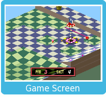

Basic Rules
On each course, the objective is to hit the ball into the hole in as few strokes as possible. Obstacles and other features of the course, as well as the obtainable Power Shot and Special Shot items, will affect your strategy.
Two types of shots are available. Use to choose between a putt and a fly shot, and to choose the direction and vertical angle. The guideline reflects where the ball will go at full power and with no spin. Pressing opens the Spin Panel, where you can adjust the spin and power of the shot.
After collecting a Power Shot or Special Shot item, your next fly shot will be a Power Shot or Special Shot, respectively. When putting, these power-ups are not used and will be carried over to the next shot.


 Basic Rules
Basic Rules to choose between a putt and a fly shot, and to choose the direction and vertical angle. The guideline reflects where the ball will go at full power and with no spin. Pressing
to choose between a putt and a fly shot, and to choose the direction and vertical angle. The guideline reflects where the ball will go at full power and with no spin. Pressing  opens the Spin Panel, where you can adjust the spin and power of the shot.
opens the Spin Panel, where you can adjust the spin and power of the shot.